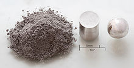

Rhodium
|  | |||||||||||||||||||||||||||||||||||||||||||||||||||||||||||||||||||||||||||||||||||||||||||||||||||||||||||||||||||||||||||||||||||||||||||||||||||||||||||||||||||||||||||||||||||||||||||||||||||||||||||||||||||||||||||||||||||||
| General properties | |||||||||||||||||||||||||||||||||||||||||||||||||||||||||||||||||||||||||||||||||||||||||||||||||||||||||||||||||||||||||||||||||||||||||||||||||||||||||||||||||||||||||||||||||||||||||||||||||||||||||||||||||||||||||||||||||||||
|---|---|---|---|---|---|---|---|---|---|---|---|---|---|---|---|---|---|---|---|---|---|---|---|---|---|---|---|---|---|---|---|---|---|---|---|---|---|---|---|---|---|---|---|---|---|---|---|---|---|---|---|---|---|---|---|---|---|---|---|---|---|---|---|---|---|---|---|---|---|---|---|---|---|---|---|---|---|---|---|---|---|---|---|---|---|---|---|---|---|---|---|---|---|---|---|---|---|---|---|---|---|---|---|---|---|---|---|---|---|---|---|---|---|---|---|---|---|---|---|---|---|---|---|---|---|---|---|---|---|---|---|---|---|---|---|---|---|---|---|---|---|---|---|---|---|---|---|---|---|---|---|---|---|---|---|---|---|---|---|---|---|---|---|---|---|---|---|---|---|---|---|---|---|---|---|---|---|---|---|---|---|---|---|---|---|---|---|---|---|---|---|---|---|---|---|---|---|---|---|---|---|---|---|---|---|---|---|---|---|---|---|---|---|---|---|---|---|---|---|---|---|---|---|---|---|---|---|---|---|
| Name, symbol | rhodium, Rh | ||||||||||||||||||||||||||||||||||||||||||||||||||||||||||||||||||||||||||||||||||||||||||||||||||||||||||||||||||||||||||||||||||||||||||||||||||||||||||||||||||||||||||||||||||||||||||||||||||||||||||||||||||||||||||||||||||||
| Pronunciation | /ˈroʊdiəm/ ROH-dee-əm |
||||||||||||||||||||||||||||||||||||||||||||||||||||||||||||||||||||||||||||||||||||||||||||||||||||||||||||||||||||||||||||||||||||||||||||||||||||||||||||||||||||||||||||||||||||||||||||||||||||||||||||||||||||||||||||||||||||
| Appearance | silvery white metallic | ||||||||||||||||||||||||||||||||||||||||||||||||||||||||||||||||||||||||||||||||||||||||||||||||||||||||||||||||||||||||||||||||||||||||||||||||||||||||||||||||||||||||||||||||||||||||||||||||||||||||||||||||||||||||||||||||||||
| Rhodium in the periodic table | |||||||||||||||||||||||||||||||||||||||||||||||||||||||||||||||||||||||||||||||||||||||||||||||||||||||||||||||||||||||||||||||||||||||||||||||||||||||||||||||||||||||||||||||||||||||||||||||||||||||||||||||||||||||||||||||||||||
|
|||||||||||||||||||||||||||||||||||||||||||||||||||||||||||||||||||||||||||||||||||||||||||||||||||||||||||||||||||||||||||||||||||||||||||||||||||||||||||||||||||||||||||||||||||||||||||||||||||||||||||||||||||||||||||||||||||||
| Atomic number | 45 | ||||||||||||||||||||||||||||||||||||||||||||||||||||||||||||||||||||||||||||||||||||||||||||||||||||||||||||||||||||||||||||||||||||||||||||||||||||||||||||||||||||||||||||||||||||||||||||||||||||||||||||||||||||||||||||||||||||
| Standard atomic weight (±) | 102.90550(2)[1] | ||||||||||||||||||||||||||||||||||||||||||||||||||||||||||||||||||||||||||||||||||||||||||||||||||||||||||||||||||||||||||||||||||||||||||||||||||||||||||||||||||||||||||||||||||||||||||||||||||||||||||||||||||||||||||||||||||||
| Element category | transition metal | ||||||||||||||||||||||||||||||||||||||||||||||||||||||||||||||||||||||||||||||||||||||||||||||||||||||||||||||||||||||||||||||||||||||||||||||||||||||||||||||||||||||||||||||||||||||||||||||||||||||||||||||||||||||||||||||||||||
| Group, block | group 9, d-block | ||||||||||||||||||||||||||||||||||||||||||||||||||||||||||||||||||||||||||||||||||||||||||||||||||||||||||||||||||||||||||||||||||||||||||||||||||||||||||||||||||||||||||||||||||||||||||||||||||||||||||||||||||||||||||||||||||||
| Period | period 5 | ||||||||||||||||||||||||||||||||||||||||||||||||||||||||||||||||||||||||||||||||||||||||||||||||||||||||||||||||||||||||||||||||||||||||||||||||||||||||||||||||||||||||||||||||||||||||||||||||||||||||||||||||||||||||||||||||||||
| Electron configuration | [Kr] 4d8 5s1 | ||||||||||||||||||||||||||||||||||||||||||||||||||||||||||||||||||||||||||||||||||||||||||||||||||||||||||||||||||||||||||||||||||||||||||||||||||||||||||||||||||||||||||||||||||||||||||||||||||||||||||||||||||||||||||||||||||||
| per shell | 2, 8, 18, 16, 1 | ||||||||||||||||||||||||||||||||||||||||||||||||||||||||||||||||||||||||||||||||||||||||||||||||||||||||||||||||||||||||||||||||||||||||||||||||||||||||||||||||||||||||||||||||||||||||||||||||||||||||||||||||||||||||||||||||||||
| Physical properties | |||||||||||||||||||||||||||||||||||||||||||||||||||||||||||||||||||||||||||||||||||||||||||||||||||||||||||||||||||||||||||||||||||||||||||||||||||||||||||||||||||||||||||||||||||||||||||||||||||||||||||||||||||||||||||||||||||||
| Phase | solid | ||||||||||||||||||||||||||||||||||||||||||||||||||||||||||||||||||||||||||||||||||||||||||||||||||||||||||||||||||||||||||||||||||||||||||||||||||||||||||||||||||||||||||||||||||||||||||||||||||||||||||||||||||||||||||||||||||||
| Melting point | 2237 K (1964 °C, 3567 °F) | ||||||||||||||||||||||||||||||||||||||||||||||||||||||||||||||||||||||||||||||||||||||||||||||||||||||||||||||||||||||||||||||||||||||||||||||||||||||||||||||||||||||||||||||||||||||||||||||||||||||||||||||||||||||||||||||||||||
| Boiling point | 3968 K (3695 °C, 6683 °F) | ||||||||||||||||||||||||||||||||||||||||||||||||||||||||||||||||||||||||||||||||||||||||||||||||||||||||||||||||||||||||||||||||||||||||||||||||||||||||||||||||||||||||||||||||||||||||||||||||||||||||||||||||||||||||||||||||||||
| Density near r.t. | 12.41 g·cm−3 | ||||||||||||||||||||||||||||||||||||||||||||||||||||||||||||||||||||||||||||||||||||||||||||||||||||||||||||||||||||||||||||||||||||||||||||||||||||||||||||||||||||||||||||||||||||||||||||||||||||||||||||||||||||||||||||||||||||
| when liquid, at m.p. | 10.7 g·cm−3 | ||||||||||||||||||||||||||||||||||||||||||||||||||||||||||||||||||||||||||||||||||||||||||||||||||||||||||||||||||||||||||||||||||||||||||||||||||||||||||||||||||||||||||||||||||||||||||||||||||||||||||||||||||||||||||||||||||||
| Heat of fusion | 26.59 kJ·mol−1 | ||||||||||||||||||||||||||||||||||||||||||||||||||||||||||||||||||||||||||||||||||||||||||||||||||||||||||||||||||||||||||||||||||||||||||||||||||||||||||||||||||||||||||||||||||||||||||||||||||||||||||||||||||||||||||||||||||||
| Heat of vaporization | 493 kJ·mol−1 | ||||||||||||||||||||||||||||||||||||||||||||||||||||||||||||||||||||||||||||||||||||||||||||||||||||||||||||||||||||||||||||||||||||||||||||||||||||||||||||||||||||||||||||||||||||||||||||||||||||||||||||||||||||||||||||||||||||
| Molar heat capacity | 24.98 J·mol−1·K−1 | ||||||||||||||||||||||||||||||||||||||||||||||||||||||||||||||||||||||||||||||||||||||||||||||||||||||||||||||||||||||||||||||||||||||||||||||||||||||||||||||||||||||||||||||||||||||||||||||||||||||||||||||||||||||||||||||||||||
vapor pressure
|
|||||||||||||||||||||||||||||||||||||||||||||||||||||||||||||||||||||||||||||||||||||||||||||||||||||||||||||||||||||||||||||||||||||||||||||||||||||||||||||||||||||||||||||||||||||||||||||||||||||||||||||||||||||||||||||||||||||
| Atomic properties | |||||||||||||||||||||||||||||||||||||||||||||||||||||||||||||||||||||||||||||||||||||||||||||||||||||||||||||||||||||||||||||||||||||||||||||||||||||||||||||||||||||||||||||||||||||||||||||||||||||||||||||||||||||||||||||||||||||
| Oxidation states | 6, 5, 4, 3, 2, 1,[2] −1 (an amphoteric oxide) | ||||||||||||||||||||||||||||||||||||||||||||||||||||||||||||||||||||||||||||||||||||||||||||||||||||||||||||||||||||||||||||||||||||||||||||||||||||||||||||||||||||||||||||||||||||||||||||||||||||||||||||||||||||||||||||||||||||
| Electronegativity | Pauling scale: 2.28 | ||||||||||||||||||||||||||||||||||||||||||||||||||||||||||||||||||||||||||||||||||||||||||||||||||||||||||||||||||||||||||||||||||||||||||||||||||||||||||||||||||||||||||||||||||||||||||||||||||||||||||||||||||||||||||||||||||||
| Ionization energies | 1st: 719.7 kJ·mol−1 2nd: 1740 kJ·mol−1 3rd: 2997 kJ·mol−1 |
||||||||||||||||||||||||||||||||||||||||||||||||||||||||||||||||||||||||||||||||||||||||||||||||||||||||||||||||||||||||||||||||||||||||||||||||||||||||||||||||||||||||||||||||||||||||||||||||||||||||||||||||||||||||||||||||||||
| Atomic radius | empirical: 134 pm | ||||||||||||||||||||||||||||||||||||||||||||||||||||||||||||||||||||||||||||||||||||||||||||||||||||||||||||||||||||||||||||||||||||||||||||||||||||||||||||||||||||||||||||||||||||||||||||||||||||||||||||||||||||||||||||||||||||
| Covalent radius | 142±7 pm | ||||||||||||||||||||||||||||||||||||||||||||||||||||||||||||||||||||||||||||||||||||||||||||||||||||||||||||||||||||||||||||||||||||||||||||||||||||||||||||||||||||||||||||||||||||||||||||||||||||||||||||||||||||||||||||||||||||
| Miscellanea | |||||||||||||||||||||||||||||||||||||||||||||||||||||||||||||||||||||||||||||||||||||||||||||||||||||||||||||||||||||||||||||||||||||||||||||||||||||||||||||||||||||||||||||||||||||||||||||||||||||||||||||||||||||||||||||||||||||
| Crystal structure | face-centered cubic (fcc)
 |
||||||||||||||||||||||||||||||||||||||||||||||||||||||||||||||||||||||||||||||||||||||||||||||||||||||||||||||||||||||||||||||||||||||||||||||||||||||||||||||||||||||||||||||||||||||||||||||||||||||||||||||||||||||||||||||||||||
| Speed of sound thin rod | 4700 m·s−1 (at 20 °C) | ||||||||||||||||||||||||||||||||||||||||||||||||||||||||||||||||||||||||||||||||||||||||||||||||||||||||||||||||||||||||||||||||||||||||||||||||||||||||||||||||||||||||||||||||||||||||||||||||||||||||||||||||||||||||||||||||||||
| Thermal expansion | 8.2 µm·m−1·K−1 (at 25 °C) | ||||||||||||||||||||||||||||||||||||||||||||||||||||||||||||||||||||||||||||||||||||||||||||||||||||||||||||||||||||||||||||||||||||||||||||||||||||||||||||||||||||||||||||||||||||||||||||||||||||||||||||||||||||||||||||||||||||
| Thermal conductivity | 150 W·m−1·K−1 | ||||||||||||||||||||||||||||||||||||||||||||||||||||||||||||||||||||||||||||||||||||||||||||||||||||||||||||||||||||||||||||||||||||||||||||||||||||||||||||||||||||||||||||||||||||||||||||||||||||||||||||||||||||||||||||||||||||
| Electrical resistivity | 43.3 nΩ·m (at 0 °C) | ||||||||||||||||||||||||||||||||||||||||||||||||||||||||||||||||||||||||||||||||||||||||||||||||||||||||||||||||||||||||||||||||||||||||||||||||||||||||||||||||||||||||||||||||||||||||||||||||||||||||||||||||||||||||||||||||||||
| Magnetic ordering | paramagnetic[3] | ||||||||||||||||||||||||||||||||||||||||||||||||||||||||||||||||||||||||||||||||||||||||||||||||||||||||||||||||||||||||||||||||||||||||||||||||||||||||||||||||||||||||||||||||||||||||||||||||||||||||||||||||||||||||||||||||||||
| Young's modulus | 380 GPa | ||||||||||||||||||||||||||||||||||||||||||||||||||||||||||||||||||||||||||||||||||||||||||||||||||||||||||||||||||||||||||||||||||||||||||||||||||||||||||||||||||||||||||||||||||||||||||||||||||||||||||||||||||||||||||||||||||||
| Shear modulus | 150 GPa | ||||||||||||||||||||||||||||||||||||||||||||||||||||||||||||||||||||||||||||||||||||||||||||||||||||||||||||||||||||||||||||||||||||||||||||||||||||||||||||||||||||||||||||||||||||||||||||||||||||||||||||||||||||||||||||||||||||
| Bulk modulus | 275 GPa | ||||||||||||||||||||||||||||||||||||||||||||||||||||||||||||||||||||||||||||||||||||||||||||||||||||||||||||||||||||||||||||||||||||||||||||||||||||||||||||||||||||||||||||||||||||||||||||||||||||||||||||||||||||||||||||||||||||
| Poisson ratio | 0.26 | ||||||||||||||||||||||||||||||||||||||||||||||||||||||||||||||||||||||||||||||||||||||||||||||||||||||||||||||||||||||||||||||||||||||||||||||||||||||||||||||||||||||||||||||||||||||||||||||||||||||||||||||||||||||||||||||||||||
| Mohs hardness | 6.0 | ||||||||||||||||||||||||||||||||||||||||||||||||||||||||||||||||||||||||||||||||||||||||||||||||||||||||||||||||||||||||||||||||||||||||||||||||||||||||||||||||||||||||||||||||||||||||||||||||||||||||||||||||||||||||||||||||||||
| Vickers hardness | 1100–8000 MPa | ||||||||||||||||||||||||||||||||||||||||||||||||||||||||||||||||||||||||||||||||||||||||||||||||||||||||||||||||||||||||||||||||||||||||||||||||||||||||||||||||||||||||||||||||||||||||||||||||||||||||||||||||||||||||||||||||||||
| Brinell hardness | 980–1350 MPa | ||||||||||||||||||||||||||||||||||||||||||||||||||||||||||||||||||||||||||||||||||||||||||||||||||||||||||||||||||||||||||||||||||||||||||||||||||||||||||||||||||||||||||||||||||||||||||||||||||||||||||||||||||||||||||||||||||||
| CAS Registry Number | 7440-16-6 | ||||||||||||||||||||||||||||||||||||||||||||||||||||||||||||||||||||||||||||||||||||||||||||||||||||||||||||||||||||||||||||||||||||||||||||||||||||||||||||||||||||||||||||||||||||||||||||||||||||||||||||||||||||||||||||||||||||
| History | |||||||||||||||||||||||||||||||||||||||||||||||||||||||||||||||||||||||||||||||||||||||||||||||||||||||||||||||||||||||||||||||||||||||||||||||||||||||||||||||||||||||||||||||||||||||||||||||||||||||||||||||||||||||||||||||||||||
| Discovery and first isolation | William Hyde Wollaston (1804) | ||||||||||||||||||||||||||||||||||||||||||||||||||||||||||||||||||||||||||||||||||||||||||||||||||||||||||||||||||||||||||||||||||||||||||||||||||||||||||||||||||||||||||||||||||||||||||||||||||||||||||||||||||||||||||||||||||||
| Most stable isotopes | |||||||||||||||||||||||||||||||||||||||||||||||||||||||||||||||||||||||||||||||||||||||||||||||||||||||||||||||||||||||||||||||||||||||||||||||||||||||||||||||||||||||||||||||||||||||||||||||||||||||||||||||||||||||||||||||||||||
|
|||||||||||||||||||||||||||||||||||||||||||||||||||||||||||||||||||||||||||||||||||||||||||||||||||||||||||||||||||||||||||||||||||||||||||||||||||||||||||||||||||||||||||||||||||||||||||||||||||||||||||||||||||||||||||||||||||||
| Decay modes in parentheses are predicted, but have not yet been observed | |||||||||||||||||||||||||||||||||||||||||||||||||||||||||||||||||||||||||||||||||||||||||||||||||||||||||||||||||||||||||||||||||||||||||||||||||||||||||||||||||||||||||||||||||||||||||||||||||||||||||||||||||||||||||||||||||||||
{kind=link}
Rhodium is a chemical element with symbol Rh and atomic number 45. It is a rare, silvery-white, hard, and chemically inert transition metal. It is a member of the platinum group. It has only one naturally occurring isotope, 103Rh. Naturally occurring rhodium is usually found as the free metal, alloyed with similar metals, and rarely as a chemical compound in minerals such as bowieite and rhodplumsite. It is one of the rarest and most valuable precious metals.
Rhodium is a so-called noble metal, resistant to corrosion, found in platinum- or nickel ores together with the other members of the platinum group metals. It was discovered in 1803 by William Hyde Wollaston in one such ore, and named for the rose color of one of its chlorine compounds, produced after it reacted with the powerful acid mixture aqua regia.
The element's major use (approximately 80% of world rhodium production) is as one of the catalysts in the three-way catalytic converters in automobiles. Because rhodium metal is inert against corrosion and most aggressive chemicals, and because of its rarity, rhodium is usually alloyed with platinum or palladium and applied in high-temperature and corrosion-resistive coatings. White gold is often plated with a thin rhodium layer to improve its appearance while sterling silver is often rhodium-plated for tarnish resistance.
Rhodium detectors are used in nuclear reactors to measure the neutron flux level.
Contents
[hide]History[edit]
{kind=link}
Rhodium (Greek rhodon (ῥόδον) meaning "rose") was discovered in 1803 by William Hyde Wollaston,[4] soon after his discovery of palladium.[5][6][7] He used crude platinum ore presumably obtained from South America.[8] His procedure involved dissolving the ore in aqua regia and neutralizing the acid with sodium hydroxide (NaOH). He then precipitated the platinum as ammonium chloroplatinate by adding ammonium chloride (NH
4Cl). Most other metals like copper, lead, palladium and rhodium were precipitated with zinc. Diluted nitric acid dissolved all but palladium and rhodium, which were dissolved in aqua regia, and the rhodium was precipitated by the addition of sodium chloride as Na
3[RhCl
6]·nH
2O. After being washed with ethanol, the rose-red precipitate was reacted with zinc, which displaced the rhodium in the ionic compound and thereby released the rhodium as free metal.[9]
After the discovery, the rare element had only minor applications; for example, by the turn of the century, rhodium-containing thermocouples were used to measure temperatures up to 1800 °C.[10][11] The first major application was electroplating for decorative uses and as corrosion-resistant coating.[12] The introduction of the three-way catalytic converter by Volvo in 1976 increased the demand for rhodium. The previous catalytic converters used platinum or palladium, while the three-way catalytic converter used rhodium to reduce the amount of NOx in the exhaust.[13][14][15]
Characteristics[edit]
| Z | Element | No. of electrons/shell |
|---|---|---|
| 27 | cobalt | 2, 8, 15, 2 |
| 45 | rhodium | 2, 8, 18, 16, 1 |
| 77 | iridium | 2, 8, 18, 32, 15, 2 |
| 109 | meitnerium | 2, 8, 18, 32, 32, 15, 2 (predicted) |
Rhodium is a hard, silvery, durable metal that has a high reflectance. Rhodium metal does not normally form an oxide, even when heated.[16] Oxygen is absorbed from the atmosphere only at the melting point of rhodium, but is released on solidification.[17] Rhodium has both a higher melting point and lower density than platinum. It is not attacked by most acids: it is completely insoluble in nitric acid and dissolves slightly in aqua regia.
Chemical properties[edit]
{kind=link}
Rhodium belongs to group 9 of the periodic table but has an atypical configuration in its outermost electron shells compared to the rest of the members. This can also be observed in the neighborhood of niobium (41), ruthenium (44), and palladium (46).
| Oxidation states of rhodium |
|
|---|---|
| +0 | Rh 4(CO) 12 |
| +1 | RhCl(PH 3) 2 |
| +2 | Rh 2(O 2CCH 3) 4 |
| +3 | RhCl 3, Rh 2O 3 |
| +4 | RhF 4, RhO 2 |
| +5 | RhF 5, Sr 3LiRhO 6 |
| +6 | RhF 6 |
The common oxidation state of rhodium is +3, but oxidation states from +0 to +6 are also observed.[18]
Unlike ruthenium and osmium, rhodium forms no volatile oxygen compounds. The known stable oxides include Rh
2O
3, RhO
2, RhO
2·xH
2O, Na
2RhO
3, Sr
3LiRhO
6 and Sr
3NaRhO
6.[19] Halogen compounds are known in nearly the full range of possible oxidation states. Rhodium(III) chloride, rhodium(IV) fluoride, rhodium(V) fluoride and rhodium(VI) fluoride are some examples. The lower oxidation states are only stable if ligands are present.[20]
The best-known rhodium-halogen compound is the Wilkinson's catalyst chlorotris(triphenylphosphine)rhodium(I). This catalyst is used, for example, in the hydroformylation or hydrogenation of alkenes.[21]
Isotopes[edit]
Naturally occurring rhodium is composed of only one isotope, 103Rh. The most stable radioisotopes are 101Rh with a half-life of 3.3 years, 102Rh with a half-life of 207 days, 102mRh with a half-life of 2.9 years, and 99Rh with a half-life of 16.1 days. Twenty other radioisotopes have been characterized with atomic weights ranging from 92.926 u (93Rh) to 116.925 u (117Rh). Most of these have half-lives shorter than an hour, except 100Rh (half-life: 20.8 hours) and 105Rh (half-life: 35.36 hours). There are also numerous meta states, the most stable being 102mRh (0.141 MeV) with a half-life of about 2.9 years and 101mRh (0.157 MeV) with a half-life of 4.34 days (see isotopes of rhodium).[22]
The primary decay mode before the only stable isotope, 103Rh, is electron capture and the primary mode after is beta emission. The primary decay product before 103Rh is ruthenium and the primary product after is palladium.[23]
Occurrence[edit]
Rhodium is one of the rarest elements in the Earth's crust, of which it comprises an estimated 0.0002 parts per million (2 × 10−10).[24] Its rarity affects its price, and thus its usage in commercial applications.
Mining and price[edit]
{kind=link}
The industrial extraction of rhodium is complex, as the metal occurs in ores mixed with other metals such as palladium, silver, platinum, and gold. It is found in platinum ores and extracted as a white inert metal which is very difficult to fuse. Principal sources are located in South Africa; in river sands of the Ural Mountains; and in North America, including the copper-nickel sulfide mining area of the Sudbury, Ontario, region. Although the quantity at Sudbury is very small, the large amount of processed nickel ore makes rhodium recovery cost-effective.
The main exporter of rhodium is South Africa (approximately 80% in 2010) followed by Russia.[25] The annual world production of this element is 30 tonnes and there are very few rhodium-bearing minerals. The price of rhodium is historically highly variable. In 2007, rhodium cost approximately eight times more than gold, 450 times more than silver, and 27,250 times more than copper by weight. In 2008, the price briefly rose above $10,000 per ounce ($350,000 per kilogram). The economic slowdown of the 3rd quarter of 2008 pushed rhodium prices sharply back below $1,000 per ounce ($35,000 per kilogram); they rebounded to $2,750 by early 2010 ($97,000 per kilogram) (over twice the gold price), but in late 2013, the prices were a bit lower than $1000.[26]
Used nuclear fuels[edit]
Rhodium is a fission product of uranium-235; therefore, each kilogram of fission products contains significant amounts of the lighter platinum group metals including rhodium. Used nuclear fuel might be a possible source for rhodium. However, the extraction is complex and expensive, and the also present radioactive isotopes of rhodium would require a storage for several half-lives of the longest-lived decaying isotope (i.e. about 10 years) to reduce the radioactivity. This makes this source of rhodium unattractive and no large-scale extraction has been attempted.[27][28][29]
Applications[edit]
The primary use of this element is in automobiles as a catalytic converter, which changes harmful unburned hydrocarbons, carbon monoxide, and nitrogen oxide emissions from the engine into less noxious gases. Of 30,000 kg of rhodium consumed worldwide in 2012, some 24,300 kg (81%) went into and 8,060 kg recovered from this application. About 964 kg of rhodium was used in the glass industry, mostly for production of fiberglass and flat-panel glass, and 2,520 kg in the chemical industry.[25]
Catalyst[edit]
In 2012, 81% of the world production of rhodium was consumed to produce three-way catalytic converters.[25] Rhodium shows some advantages over the other platinum metals in the reduction of nitrogen oxides to nitrogen and oxygen:[30]
- 2 NO
x → x O
2 + N
2
Rhodium-based catalysts are used in a number of industrial processes; notably, in the automobile catalytic converters and for catalytic carbonylation of methanol to produce acetic acid by the Monsanto process.[31] It is also used to catalyze addition of hydrosilanes to molecular double bonds, a process important in manufacture of certain silicone rubbers.[32] Rhodium catalysts are also used to reduce benzene to cyclohexane.[33]
The complex of a rhodium ion with BINAP gives a widely used chiral catalyst for chiral synthesis, as in the synthesis of menthol.[34]
Ornamental uses[edit]
Rhodium finds use in jewelry and for decorations. It is electroplated on white gold and platinum to give it a reflective white surface at time of sale, after which the thin layer wears away with use. This is known as rhodium flashing in the jewelry business. It may also be used in coating sterling silver to protect against tarnish, which is silver sulfide (Ag2S) produced from the atmospheric hydrogen sulfide (H2S). Solid (pure) rhodium jewelry is very rare because the metal has both a high melting point and poor malleability, making such jewelry very hard to fabricate — rather than due to its high price.[35] Additionally, its typically higher cost assures that most of its jewelry usage is in the form of tiny amounts of powder, commonly called rhodium sponge, dissolved into electroplating solutions.
Rhodium has also been used for honors or to signify elite status, when more commonly used metals such as silver, gold or platinum were deemed insufficient. In 1979 the Guinness Book of World Records gave Paul McCartney a rhodium-plated disc for being history's all-time best-selling songwriter and recording artist.[36]
Other uses[edit]
Rhodium is used as an alloying agent for hardening and improving the corrosion resistance[16] of platinum and palladium. These alloys are used in furnace windings, bushings for glass fiber production, thermocouple elements, electrodes for aircraft spark plugs, and laboratory crucibles.[37] Other uses include:
- An electrical contact material due to its low electrical resistance, low and stable contact resistance, and high corrosion resistance.[38]
- Plated rhodium, made by electroplating or evaporation, is extremely hard and is used for optical instruments.[39]
- It is also used as a filter in mammography systems because of the characteristic X-rays it produces.[40]
- Rhodium neutron detectors are used in combustion engineering nuclear reactors to measure neutron flux levels – a method that requires a digital filter to determine the current neutron flux level, as there are three signals generated: immediate, a few seconds later, and a minute later, each with its own signal level, and all three are combined in the rhodium detector signals. The three Palo Verde nuclear reactors each have 305 rhodium neutron detectors, 61 detectors on each of five vertical levels, providing an accurate 3D "picture" of reactivity and allowing fine tuning to most economically burn the nuclear fuel.[41]
-
A 78 g sample of rhodium
-
Cross section of a metal-core catalytic converter
-
Rhodium-plated white gold wedding ring
-
Rhodium foil and wire
{kind=link}
{kind=link}
{kind=link}
{kind=link}
Precautions[edit]
Being a noble metal, pure rhodium is inert. However, chemical complexes of rhodium can be reactive. Median lethal dose (LD50) for rats is 198 mg of rhodium chloride (RhCl
3) per kilogram of body weight.[42]
Like the other noble metals, all of which are too inert to occur as
chemical compounds in nature, rhodium has not been found to play any
biological role. If used in elemental form rather than as compounds, the
metal is harmless.[43]
See also[edit]
References[edit]
- Jump up ^ Standard Atomic Weights 2013. Commission on Isotopic Abundances and Atomic Weights
- Jump up ^ "Rhodium: rhodium(I) fluoride compound data". OpenMOPAC.net. Retrieved 2007-12-10.
- Jump up ^ Lide, D. R., ed. (2005). "Magnetic susceptibility of the elements and inorganic compounds". CRC Handbook of Chemistry and Physics (PDF) (86th ed.). Boca Raton (FL): CRC Press. ISBN 0-8493-0486-5.
- Jump up ^ Wollaston, W. H. (1804). "On a New Metal, Found in Crude Platina". Philosophical Transactions of the Royal Society of London 94: 419–430. doi:10.1098/rstl.1804.0019.
- Jump up ^ Griffith, W. P. (2003). "Rhodium and Palladium – Events Surrounding Its Discovery". Platinum Metals Review 47 (4): 175–183.
- Jump up ^ Wollaston, W. H. (1805). "On the Discovery of Palladium; With Observations on Other Substances Found with Platina". Philosophical Transactions of the Royal Society of London 95: 316–330. doi:10.1098/rstl.1805.0024.
- Jump up ^ Usselman, Melvyn (1978). "The Wollaston/Chenevix controversy over the elemental nature of palladium: A curious episode in the history of chemistry". Annals of Science 35 (6): 551–579. doi:10.1080/00033797800200431.
- Jump up ^ Lide, David R. (2004). CRC handbook of chemistry and physics: a ready-reference book of chemical and physical data. Boca Raton: CRC Press. pp. 4–26. ISBN 0-8493-0485-7.
- Jump up ^ Griffith, W. P. (2003). "Bicentenary of Four Platinum Group Metals: Osmium and iridium – events surrounding their discoveries". Platinum Metals Review 47 (4): 175–183.
- Jump up ^ Hulett, G. A.; Berger, H. W. (1904). "VOLATILIZATION OF PLATINUM doi = 10.1021/ja02001a012". Journal of the American Chemical Society 26 (11): 1512. doi:10.1021/ja02001a012.
- Jump up ^ Measurement, Astm Committee E.2.0. on Temperature (1993). "Platinum Type". Manual on the use of thermocouples in temperature measurement. ASTM International. ISBN 978-0-8031-1466-1.
- Jump up ^ Kushner, Joseph B. (1940). "Modern rhodium plating". Metals and Alloys 11: 137–140.
- Jump up ^ Amatayakul, W; Ramnäs, Olle (2001). "Life cycle assessment of a catalytic converter for passenger cars". Journal of Cleaner Production 9 (5): 395. doi:10.1016/S0959-6526(00)00082-2.
- Jump up ^ Heck, R; Farrauto, Robert J. (2001). "Automobile exhaust catalysts". Applied Catalysis A: General 221: 443. doi:10.1016/S0926-860X(01)00818-3.
- Jump up ^ Heck, R; Gulati, Suresh; Farrauto, Robert J. (2001). "The application of monoliths for gas phase catalytic reactions". Chemical Engineering Journal 82: 149. doi:10.1016/S1385-8947(00)00365-X.
- ^ Jump up to: a b Cramer, Stephen D.; Covino, Jr., Bernard S., eds. (1990). ASM handbook. Materials Park, OH: ASM International. pp. 393–396. ISBN 0-87170-707-1.
- Jump up ^ Emsley, John (2001). Nature's Building Blocks ((Hardcover, First Edition) ed.). Oxford University Press. p. 363. ISBN 0-19-850340-7.
- Jump up ^ Holleman, Arnold F.; Wiberg, Egon; Wiberg, Nils (1985). Lehrbuch der Anorganischen Chemie (91–100 ed.). Walter de Gruyter. pp. 1056–1057. ISBN 3-11-007511-3.
- Jump up ^ Reisner, B. A.; Stacy, A. M. (1998). "Sr
3ARhO
6 (A = Li, Na): Crystallization of a Rhodium(V) Oxide from Molten Hydroxide". Of the American Chemical Society 120 (37): 9682–9989. doi:10.1021/ja974231q. - Jump up ^ Griffith, W. P. The Rarer Platinum Metals, John Wiley and Sons: New York, 1976, p. 313.
- Jump up ^ Osborn, J. A.; Jardine, F. H.; Young, J. F.; Wilkinson, G. (1966). "The Preparation and Properties of Tris(triphenylphosphine)halogenorhodium(I) and Some Reactions Thereof Including Catalytic Homogeneous Hydrogenation of Olefins and Acetylenes and Their Derivatives". Journal of the Chemical Society A: 1711–1732. doi:10.1039/J19660001711.
- Jump up ^ Audi, G.; Bersillon, O.; Blachot, J.; Wapstra, A.H. (2003). "The NUBASE Evaluation of Nuclear and Decay Properties". Nuclear Physics A (Atomic Mass Data Center) 729: 3–128. Bibcode:2003NuPhA.729....3A. doi:10.1016/j.nuclphysa.2003.11.001.
- Jump up ^ David R. Lide (ed.), Norman E. Holden in CRC Handbook of Chemistry and Physics, 85th Edition CRC Press. Boca Raton, Florida (2005). Section 11, Table of the Isotopes.
- Jump up ^ Barbalace, Kenneth, "Table of Elements". Environmental Chemistry.com; retrieved 2007-04-14.
- ^ Jump up to: a b c Loferski, Patricia J. (2013). "Commodity Report: Platinum-Group Metals" (PDF). United States Geological Survey. Retrieved 2012-07-16.
- Jump up ^ "Rhodium". www.kitco.com. Retrieved 2010-06-09.
- Jump up ^ Kolarik, Zdenek; Renard, Edouard V. (2005). "Potential Applications of Fission Platinoids in Industry" (PDF). Platinum Metals Review 49 (2): 79. doi:10.1595/147106705X35263.
- Jump up ^ Kolarik, Zdenek; Renard, Edouard V. (2003). "Recovery of Value Fission Platinoids from Spent Nuclear Fuel. Part I PART I: General Considerations and Basic Chemistry" (PDF). Platinum Metals Review 47 (2): 74–87.
- Jump up ^ Kolarik, Zdenek; Renard, Edouard V. (2003). "Recovery of Value Fission Platinoids from Spent Nuclear Fuel. Part II: Separation Process" (PDF). Platinum Metals Review 47 (2): 123–131.
- Jump up ^ Shelef, M.; Graham, G. W. (1994). "Why Rhodium in Automotive Three-Way Catalysts?". Catalysis Reviews 36 (3): 433–457. doi:10.1080/01614949408009468.
- Jump up ^ Roth, James F. (1975). "Rhodium Catalysed Carbonylation of Methanol" (PDF). Platinum Metals Review 19 (1 January): 12–14.
- Jump up ^ Heidingsfeldova, M. & Capka, M. (2003). "Rhodium complexes as catalysts for hydrosilylation crosslinking of silicone rubber". Journal of Applied Polymer Science 30 (5): 1837. doi:10.1002/app.1985.070300505.
- Jump up ^ Halligudi, S. B. et al. (1992). "Hydrogenation of benzene to cyclohexane catalyzed by rhodium(I) complex supported on montmorillonite clay". Reaction Kinetics and Catalysis Letters 48 (2): 547. doi:10.1007/BF02162706.
- Jump up ^ Akutagawa, S. (1995). "Asymmetric synthesis by metal BINAP catalysts". Applied Catalysis A 128 (2): 171. doi:10.1016/0926-860X(95)00097-6.
- Jump up ^ Fischer, Torkel; Fregert, S; Gruvberger, B; Rystedt, I (1984). "Contact sensitivity to nickel in white gold". Contact Dermatitis 10 (1): 23–24. doi:10.1111/j.1600-0536.1984.tb00056.x. PMID 6705515.
- Jump up ^ "Hit & Run: Ring the changes". The Independent (London). 2008-12-02. Retrieved 2009-06-06.
- Jump up ^ Lide, David R (2004). CRC handbook of chemistry and physics 2004–2005: a ready-reference book of chemical and physical data (85th ed.). Boca Raton: CRC Press. pp. 4–26. ISBN 0-8493-0485-7.
- Jump up ^ Weisberg, Alfred M. (1999). "Rhodium plating". Metal Finishing 97 (1): 296–299. doi:10.1016/S0026-0576(00)83088-3.
- Jump up ^ Smith, Warren J. (2007). "Reflectors". Modern optical engineering: the design of optical systems. McGraw-Hill. pp. 247–248. ISBN 978-0-07-147687-4.
- Jump up ^ McDonagh, C P et al. (1984). "Optimum x-ray spectra for mammography: choice of K-edge filters for tungsten anode tubes". Phys. Med. Biol. 29 (3): 249. Bibcode:1984PMB....29..249M. doi:10.1088/0031-9155/29/3/004.
- Jump up ^ Sokolov, A. P.; Pochivalin, G. P.; Shipovskikh, Yu. M.; Garusov, Yu. V.; Chernikov, O. G.; Shevchenko, V. G. (1993). "Rhodium self-powered detector for monitoring neutron fluence, energy production, and isotopic composition of fuel". Atomic Energy 74 (5): 365–367. doi:10.1007/BF00844622.
- Jump up ^ Landolt, Robert R.; Berk Harold W.; Russell, Henry T. (1972). "Studies on the toxicity of rhodium trichloride in rats and rabbits". Toxicology and Applied Pharmacology 21 (4): 589–590. doi:10.1016/0041-008X(72)90016-6. PMID 5047055.
- Jump up ^ Leikin, Jerrold B.; Paloucek Frank P. (2008). Poisoning and Toxicology Handbook. Informa Health Care. p. 846. ISBN 978-1-4200-4479-9.
External links[edit]
| Wikimedia Commons has media related to Rhodium. |
| Look up rhodium in Wiktionary, the free dictionary. |
- Rhodium at The Periodic Table of Videos (University of Nottingham)
- Current Rhodium price
- Rhodium Technical and Safety Data
- CDC - NIOSH Pocket Guide to Chemical Hazards
| [hide] Periodic table (Large cells) | |||||||||||||||||||||||||||||||||
|---|---|---|---|---|---|---|---|---|---|---|---|---|---|---|---|---|---|---|---|---|---|---|---|---|---|---|---|---|---|---|---|---|---|
| 1 | 2 | 3 | 4 | 5 | 6 | 7 | 8 | 9 | 10 | 11 | 12 | 13 | 14 | 15 | 16 | 17 | 18 | ||||||||||||||||
| 1 | H | He | |||||||||||||||||||||||||||||||
| 2 | Li | Be | B | C | N | O | F | Ne | |||||||||||||||||||||||||
| 3 | Na | Mg | Al | Si | P | S | Cl | Ar | |||||||||||||||||||||||||
| 4 | K | Ca | Sc | Ti | V | Cr | Mn | Fe | Co | Ni | Cu | Zn | Ga | Ge | As | Se | Br | Kr | |||||||||||||||
| 5 | Rb | Sr | Y | Zr | Nb | Mo | Tc | Ru | Rh | Pd | Ag | Cd | In | Sn | Sb | Te | I | Xe | |||||||||||||||
| 6 | Cs | Ba | La | Ce | Pr | Nd | Pm | Sm | Eu | Gd | Tb | Dy | Ho | Er | Tm | Yb | Lu | Hf | Ta | W | Re | Os | Ir | Pt | Au | Hg | Tl | Pb | Bi | Po | At | Rn | |
| 7 | Fr | Ra | Ac | Th | Pa | U | Np | Pu | Am | Cm | Bk | Cf | Es | Fm | Md | No | Lr | Rf | Db | Sg | Bh | Hs | Mt | Ds | Rg | Cn | 113 | Fl | 115 | Lv | 117 | 118 | |
|
|
|||||||||||||||||||||||||||||||||
|
||
|
||